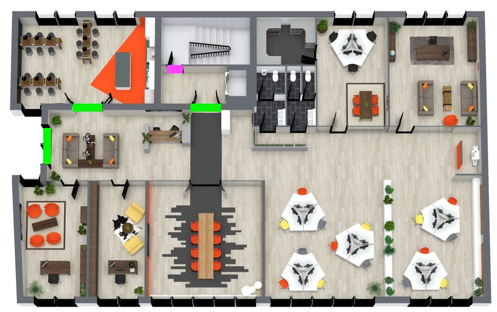

Este proyecto muestra la instalación del sistema de control de acceso para la empresa, incluyendo cerraduras inteligentes, lectores RFID y terminales biométricos para garantizar que solo el personal autorizado pueda acceder a zonas críticas como el cuarto de telecomunicaciones.
